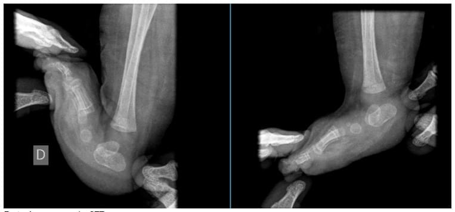

Duas radiografias de perfil, quatro suspeitos. A banca do TARO 2022 quer o nome da deformidade.
2 a pergunta · 3 classificados · 4 veredito · 5 para a prova
Comente a sua letra antes de virar a página.
Quatro deformidades do pé disputam a vaga. Confira onde cada uma aparece.
Luxação dorsal fixa da talonavicular com equino rígido do retropé. Planta convexa, em mata-borrão.
No perfil: tálus quase paralelo à tíbiaProblema do plano horizontal: antepé aduzido, navicular subluxado para lateral, retropé valgo. O pé em Z.
Aparece no AP, não no perfilDorso do pé perto da tíbia, mas o pé é flexível e o calcâneo está em dorsiflexão.
No perfil: nada luxado, nada presoEquino com varo e adução. Tálus e calcâneo paralelos, talocalcâneo diminuído.
No perfil em dorsiflexão: talocalcâneo perto de 0°Volte às radiografias e faça a pergunta certa: quando o pé é forçado, o que se mexe e o que fica preso?
Dorsiflexão máxima: tálus e calcâneo continuam em flexão plantar. O equino do retropé é rígido.
Flexão plantar máxima: o antepé não se alinha com o tálus. O navicular luxado no dorso do colo não reduz.
Se reduzisse na flexão plantar, com o resto igual, seria tálus oblíquo. Fonte: Tachdjian, cap. 19.
Perfil em flexão plantar e em dorsiflexão máximas: cada foto responde a uma pergunta.
| Condição | Flexão plantar máxima | Dorsiflexão máxima | Retropé |
|---|---|---|---|
| Tálus vertical | navicular não reduz | tálus e calcâneo seguem fletidos | equino rígido |
| Tálus oblíquo | navicular reduz | calcâneo em equino | equino |
| Calcaneovalgo | não há luxação | dorso do pé encosta na tíbia | dorsiflexão, flexível |
Forçou e nada mudou: tálus vertical. Reduziu na flexão plantar: tálus oblíquo. Calcâneo para cima e pé flexível: calcaneovalgo.
Questão pe-tornozelo-0076
TARO 2022 · comentada no site
Volte às duas fotos e confira: nada saiu do lugar.
“As radiografias em perfil do pé da criança com flexão dorsal e plantar máximas demonstradas nas imagens a seguir caracterizam a deformidade do pé”
O teste é dinâmico: forçar o pé e ver o que se mexe e o que fica preso.
Dorsiflexão máxima: o retropé sai do equino?
Flexão plantar máxima: o navicular volta para a cabeça do tálus?
Luxação dorsal fixa da talonavicular com equino rígido do retropé.
Dorsiflexão máxima: tálus e calcâneo seguem em flexão plantar.
Flexão plantar máxima: o navicular não reduz.
Se reduzisse, seria tálus oblíquo. Calcâneo para cima e pé flexível é calcaneovalgo.